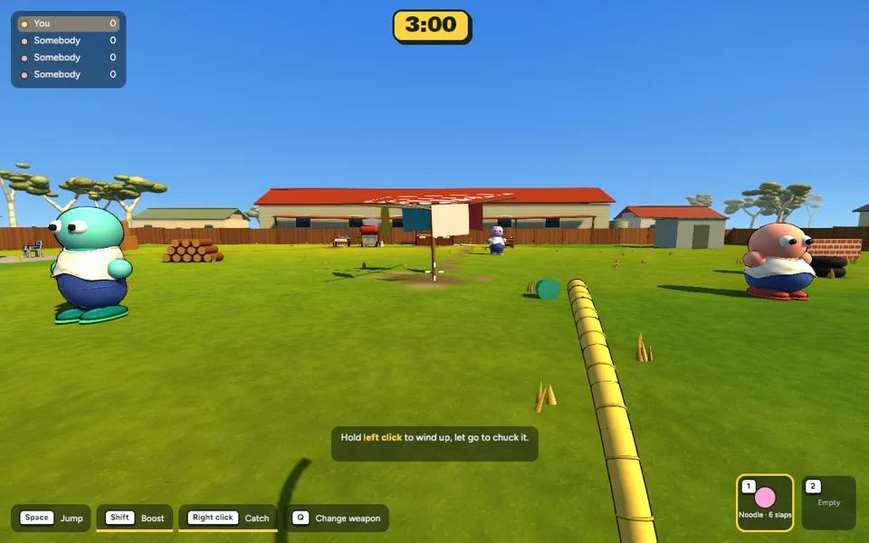
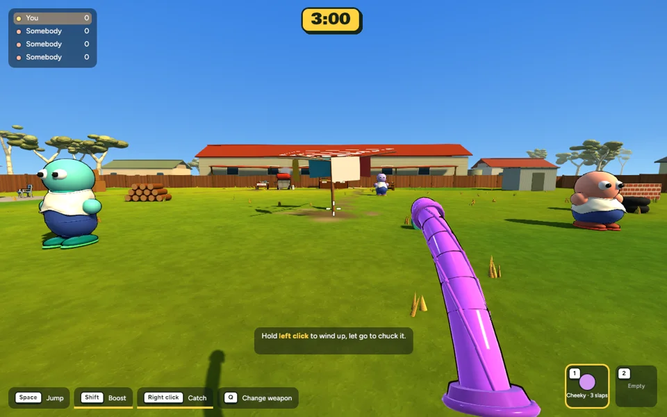
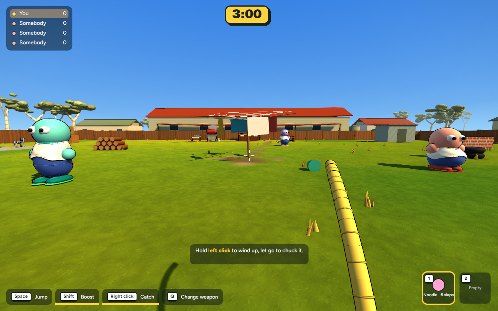

Actual implemented first-person captures · 14 October 2026 · Review before committing.
The noodle stays loose; rubber has a firmer rebound. Random idle jolts and oversized footstep kicks are replaced with a continuous running rhythm, start/stop response and gentler turn lag. Q changes between your two held weapons; the existing binding is now clearly labelled in the HUD and controls.
Controlled input sequence: idle 0–0.5s, walk 0.5–1.5s, run and turn 1.5–3s, stop and settle 3–5s. The player stays in one location for comparison. These are rendered game frames driven by staged inputs, not a human gameplay recording.



591 tests passed (one existing ignored test); release build passed. Matching 11-bot benchmark: 7.578 → 7.709 ms mean frame time (+1.7%), 131.97 → 129.72 FPS, P95 8.384 → 8.485 ms. Both runs had zero of 600 frames over 16.67 ms. Mesh/material counts and image memory are unchanged. Single runs on this Mac; the small difference does not establish a meaningful regression.
Short clips help compare flex, but the final amount of comedy needs your playtest. Shared springs remain a visual approximation; this does not add costly soft-body simulation or change aiming/catch colliders.